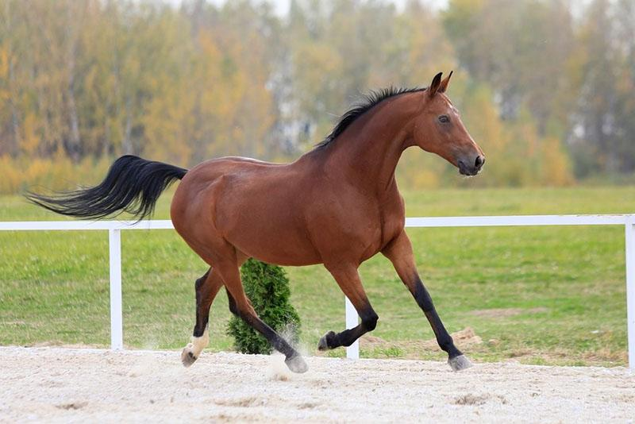
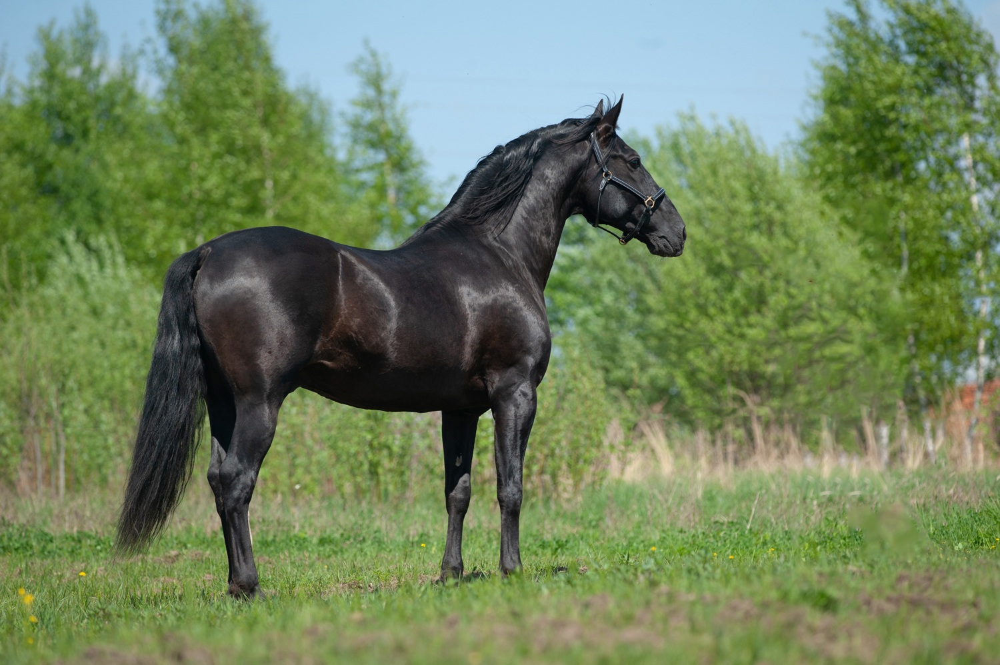
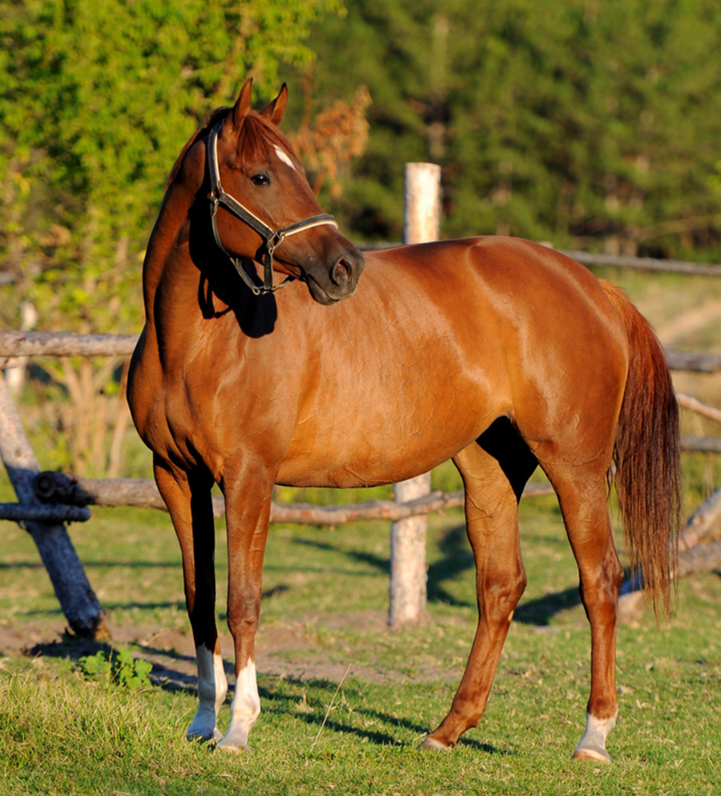
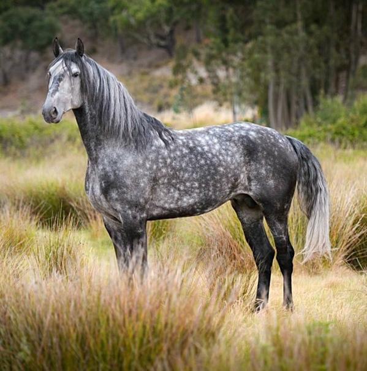

Масти лошадей
Масть лошади — сочетание окраса (цвета) поверхности кожи, волосяного покрова корпуса, ног, нависа (гривы и хвоста) лошади. Многие масти имеют светлые или тёмные оттенки, золотистый или серебристый блеск, осветления различных участков тела — морды, паха, живота, поэтому именований мастей и отмастков существует несколько десятков, а по некоторым из них нет общего мнения даже у специалистов-коневодов.
Еще со времен Гиппократа принято выделять 4 основных масти лошадей:
Однако современные генетики предлагают и другие классификации.
Гнедая масть
Гнедая — лошадь, корпус которой коричневого окраса различных оттенков, от огненно-рыжего до почти чёрного, похожего на караковую, а грива, хвост и нижние части ног, до скакательных и запястных суставов включительно — чёрные. Изредка встречается так называемая «дикая» гнедая масть, при которой чёрный волос на ногах лошади частично перемешан с коричневым, в результате чего дистальные отделы конечностей не угольно-чёрные, и чёрная шерсть не доходит до запястных и скакательных суставов.
Вороная масть
Вороная — целиком чёрная.
Рыжая масть
Рыжая — целиком рыжего цвета; имеет разные оттенки от светлого абрикосового и жёлтого до тёмно-каштанового, граничащего со светло-бурой. Грива и хвост могут по сравнению с туловищем иметь цвет более тёмный (например, бурый при светлом золотистом оттенке шерсти) или более светлый (с примесью белёсых волос). У некоторых рыжих лошадей грива и хвост белеют в зависимости от времени года. Ноги рыжей лошади всегда того же оттенка, что и туловище. В этом её главное отличие от гнедой масти.
Серая масть
Серая — седая. На любой из вышеперечисленных мастей примесь белых волос, которая увеличивается с каждой линькой. Серый жеребёнок может родиться, например, вороным, но уже в возрасте нескольких месяцев у него появятся белые волоски, которых с возрастом будет всё больше и больше. К своему «совершеннолетию» этот жеребёнок будет иметь уже довольно светлую серую окраску, а ещё через несколько лет может поседеть добела. Быстрее всего седеют и выглядят самыми светлыми голова и живот, окрашенный волос долго сохраняется на крупе и ногах, особенно на скакательных и запястных суставах. Для серой масти характерны «яблоки» — круглые более светлые пятна, повторяющие сетку подкожных кровеносных сосудов. Но бывают, хотя и довольно редко, серые лошади совсем без «яблок». У поседевших добела лошадей могут появиться маленькие цветные пятнышки — это масть серая в гречку. Скорость поседения серых лошадей индивидуальна, некоторые становятся совершенно белыми уже к трём-четырём годам, а некоторые остаются довольно тёмными вплоть до старости. Поседевшая добела лошадь называется светло-серой, несмотря на практически чисто-белый цвет волосяного покрова. Серая масть относится к мастям из двух смешанных цветов как покровного волоса, так и гривы с хвостом. Это смесь чёрных волос с белыми. Их сочетания в разных пропорциях и конфигурациях дают как тёмно-серую, так и светло-серую масть, или «горностаевую» (почти чёрные хвост и грива при светлом корпусе), или «в яблоках». К старости серые лошади становятся совершенно белыми с разбросанными по корпусу мелкими тёмными пятнышками — «в гречку».
